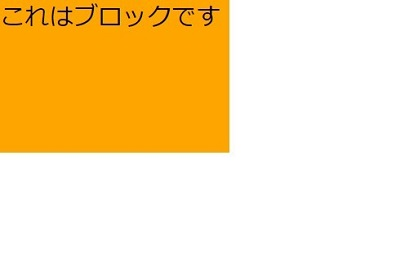

displayはCSSで使用されるプロパティの1つで、要素の表示形式を決めるプロパティです。
設定できる値はいくつかあります。その中でも一番ややこしいのが block inline inline-block の3つです。一部のHTMLタグはデフォルトで初期値が決まっているものがあります。
display: blockはdivタグ・pタグ・h1～h6の見出しタグなどがデフォルトで設定されています。
特徴① 要素は縦に並ぶ
HTMLにdisplay: blockが設定された要素を並べると要素の前後に改行が入り縦に並びます。
【HTML】これはブロック1です
これはブロック2です
【CSS】 .block1 { background: orange; } .block2 { background: skyblue; }
特徴② 幅と高さが指定可能
display: blockが設定されている要素は幅(width)と高さ(height)を指定できます。
【HTML】これはブロックです
【CSS】 .block1 { background: orange; width: 150px; height: 100px; }
特徴③ 余白の指定が可能
display: blockが設定されている要素はpaddingとmarginの設定が可能です。paddingとmarginについては marginとpaddingのページ を参照してください。
【HTML】これはブロックなので余白指定が可能です。
【CSS】 .block1 { background: orange; padding: 20px; margin: 5px; }
特徴④ text-alignやvertical-alignの指定はできない
display: blockが設定されている要素はtext-alignやvertical-alignの指定ができません。text-alignは横方向のテキストの揃え方を指定できるプロパティ、vertical-alignはtext-alignの縦バージョンです。ですので、以下の例では反映されていないことが分かります。
【HTML】これはブロックなので指定ができません…。
【CSS】 .block1 { background: orange; width: 50px; text-align: center; }
display: inlineはaタグ・spanタグ・imgタグなどがデフォルトで設定されています。
特徴① 文中の一部として使う
display: inlineは、主に文中の一部として用いられます。
使用例として、テキストの装飾やリンクなどの要素が多いです。
特徴② 要素は横に並ぶ
HTMLにdisplay: inlineが設定された要素を並べると要素の前後に改行が入らず、横に並びます。以下の例のように、デフォルトでinlineが設定されているaタグとspanタグは横に並びます。
【HTML】これはaタグとspanタグです
【CSS】 a { background: skyblue; color:white; } span { background: orange; }
特徴③ blockの中で使用する
基本的にinline要素はblockの要素の中に入ります。逆にinline要素の中にblock要素は基本的に入れません。
特徴④ 幅と高さが指定不可能
display: inlineが設定されている要素は幅(width)と高さ(height)の指定ができません。inline要素の幅と高さは「要素の中身」に応じて決まるので、自動で決まってしまいます。
特徴⑤ 上下の余白指定が不可能
display: inlineが設定されている要素はpaddingとmarginの設定が可能ですが、左右の指定のみに限ります。paddingで上下の指定はできますが、大きくするとデザインが崩れてしまい、前後の行と被ってしまいます。ですので、基本的にはinlineでは左右のみ余白指定ができると思っておけばOKです。
【HTML】これはmargin20pxのspanタグです。
これはpadding20pxのspanタグです。
【CSS】 .example { margin: 20px; background: skyblue; } .example2 { padding: 20px; background: orange; }
特徴⑥ text-alignの指定が可
display: inlineが設定されている要素はtext-alignやvertical-alignが指定できます。ただし、text-alignの指定をする際には以下の例のように親要素に指定する必要があります。
(vertical-alignはinline要素に直接指定でOKです)
【HTML】inline【CSS】 /* 親要素のdivに指定する */ #example { text-align:center; } span { background: orange; }
display: inline-blockはblockとinlineの間を取ったようなもので、並び方はinline的、要素の中身はblock的な性質を持っています。メニューバーなど、ボタンを横並びするときなどに使うと便利です。
特徴① 改行が入らずに横に並ぶ
display: inline-blockが設定されている要素はinline要素と同じく、改行が入らずに横に並びます。
特徴② 幅と高さが指定可能
block要素と同じで、幅(width)と高さ(height)の指定が可能です。
特徴③ 余白が指定可能
block要素と同じで、paddingとmarginの指定が可能です。
特徴④ text-alignとvertical-alignの指定可能
inline要素と同じで、text-alignとvertical-alignの指定が可能です。
以上の3つの値をまとめました。参考にしてください。